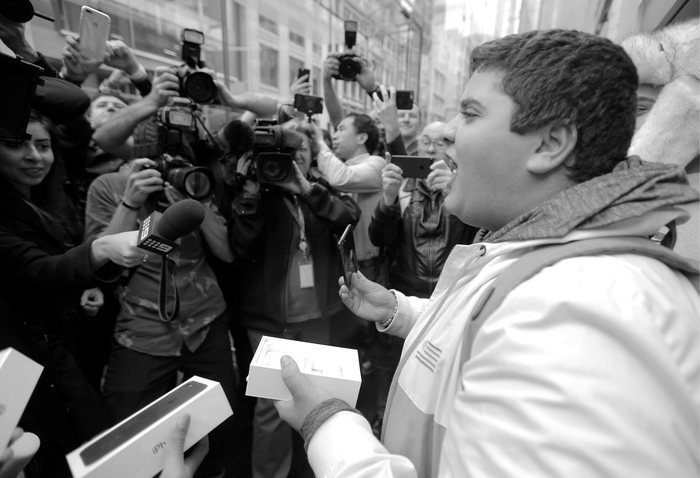

Con millenial (anteshipster, evolución del yuppie "young urban professional",con ecos de "hippie") designamos una «omnicultura» capaz de extenderse por incontables muestras de la producción de identidades actual, una especie de cajón de sastre donde caben, en mayor o menor medida, todos los estereotipos comercializables. Detentador del Zietgeist actual, más que definir una categoría cerrada, una tribu urbana con rasgos de identidad como los de antaño, lo millenialseñala una gradación: más millenial, menos millenial, que nos incluye a todos y que, por eso mismo, negamos.

Marcus Barsoum, de dieciséis años, habla con la prensa tras ser uno de los primeros clientes en adquirir un iPhone 7 en Sydney, 2016. Foto: Jason Reed/ Cordon.
La «ética de los objetos»: vigilémoslos, porque los objetos no son inocentes, están cargados de intenciones, concebidos para unos usos e impedidos para otros, atravesados de lenguaje e ideología, pensados para producir, en sus lógicas internas y formas materiales, tipos concretos de seres humanos.
Lástima que aún no hayan encontrado la máquina que nos haga trabajar, como soñaba Wozniak en su adolescencia, cuatro días a la semana (la anécdota la repite en muchas de sus conferencias como una broma para atraer las risas del público), sino más bien aquellas que tienden a la sustitución y la precarización. A quienes ocupan sectores que prontoserán reemplazados por inteligencia artificial ya se les empiezan a denominarmeat puppets, algo así como «marionetas de carne».